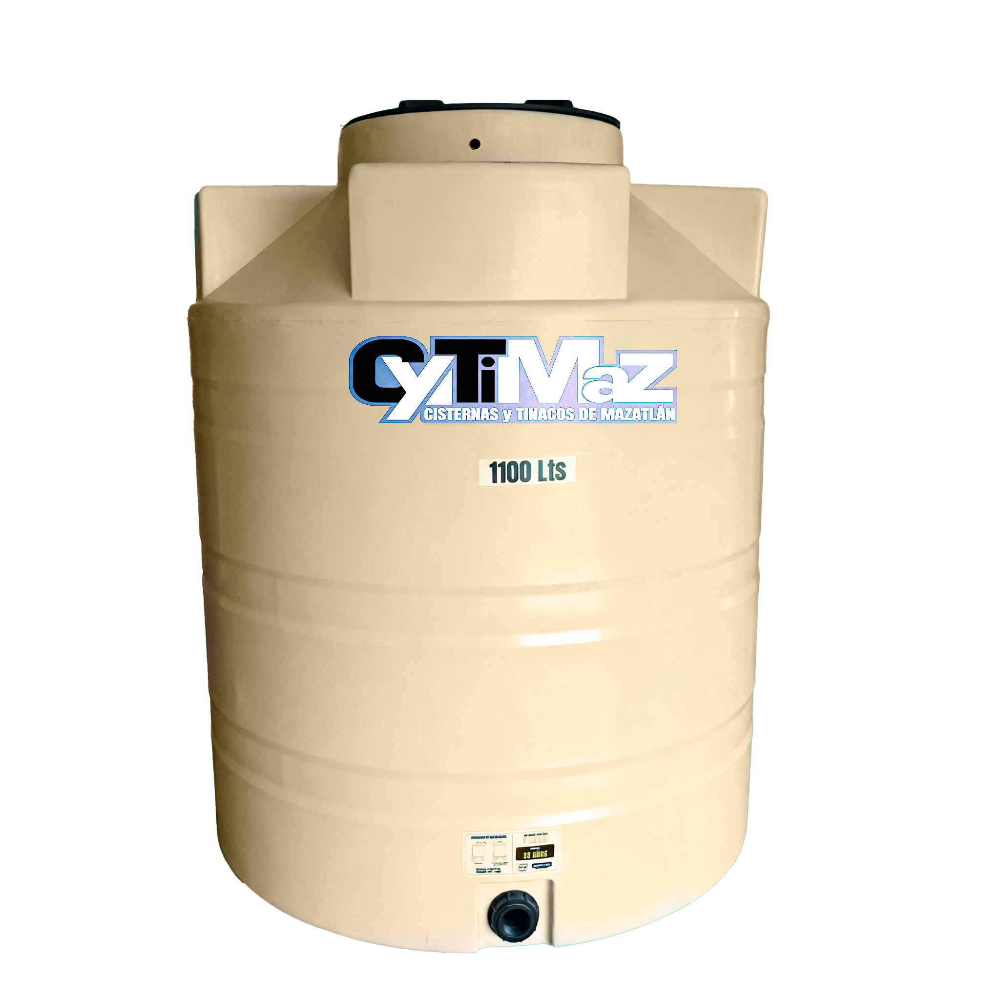

La Nueva Referencia en Reserva Hídrica
Fabricamos localmente en Mazatlán tinacos Línea Suprema (Tricapa UV-8) y Línea Esencial (Bicapa) con garantía por defectos de fábrica. ¡Venta directa sin intermediarios con Kit de Accesorios GRATIS!

Ingeniería para el Clima Extremo del Pacífico
Cada producto Cytimaz está formulado termoplásticamente para ofrecer máxima pureza hídrica, aislamiento térmico y resistencia estructural.
100% Polietileno Virgen Grado Alimenticio Certificado
Cero bisfenol A (BPA) y cero plastificantes reciclados. El agua potable conserva su frescura, sabor y pureza cristalina natural sin desprender partículas nocivas con los años.
Filtro UV Grado 8 Anti-Algas
Capa fotoprotectora que bloquea el 100% de la luz solar directa, eliminando la fotosíntesis biológica y la formación de lama verde en el agua.
Capa Antibacterial Activa
En la Línea Suprema, el interior cuenta con un componente antibacterial activo que inhibe la reproducción de microorganismos.
Rotomoldeo Monolítico sin Soldaduras
Fabricado en una sola pieza continua uniforme sin costuras ni puntos de fatiga. Imposible que se filtre o fisure.
Catálogo Oficial de Tinacos y Cisternas Cytimaz
Elige entre nuestra Línea Suprema (Tricapa) para máxima salud y protección UV, nuestra Línea Esencial (Bicapa) para el mejor precio, o nuestras Cisternas Reforzadas.
Comparador de Líneas Cytimaz
Descubre con claridad las diferencias entre nuestra Línea Esencial (Bicapa) y nuestra Línea Suprema (Tricapa Antibacterial) para tomar la mejor decisión de compra.
¿Qué capacidad de tinaco o cisterna necesitas?
Selecciona el número de personas en tu vivienda y el tipo de instalación para obtener la recomendación óptima de reserva de agua.
Tinaco Línea Suprema Mazatlán
Nuestra capacidad más vendida en Línea Suprema. Brinda de 2 a 3 días de autonomía garantizada para familias medianas con triple capa antibacterial.
💬 Cotizar esta recomendación por WhatsApp